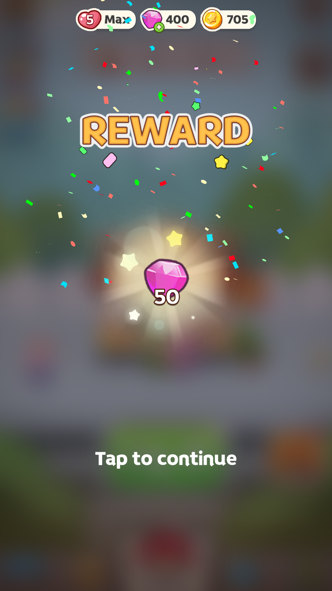
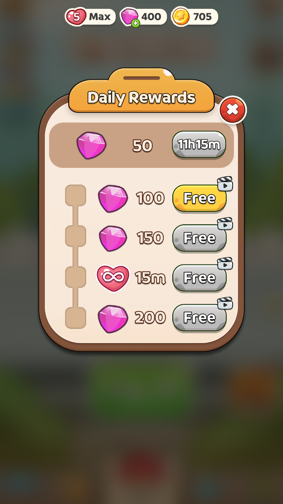
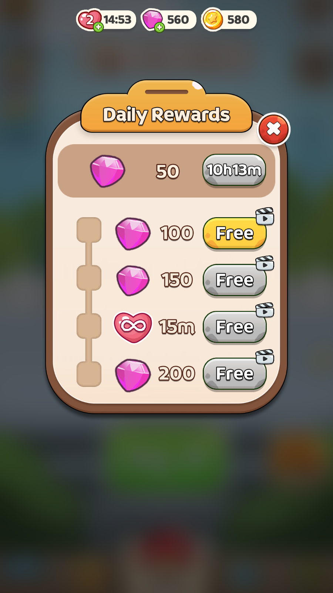

Quà hằng ngày (Daily Rewards)
Mô tả
- Popup 5 hàng quà, chạy bằng LiveOp
dailyrewardtrongCakeOrder. - Hàng đầu miễn phí 1 lần mỗi ngày, xen kẽ 15 phút tim vô hạn (ngày đăng nhập lẻ) và 50 gem (ngày chẵn).
- 4 hàng sau là thang quảng cáo: 100 gem, 150 gem, 15 phút tim vô hạn, 200 gem; mỗi hàng cần xem 1 video thưởng và phải nhận lần lượt từ trên xuống.
- Mỗi hàng chỉ nhận 1 lần mỗi ngày dương lịch, reset lúc nửa đêm (00:00 UTC = 07:00 giờ VN) (giờ
OnlineTimeCheck). - Không có mốc mở khoá theo level trong code; thấy ngay ở Day 13 khi chơi thật.
Thiết kế chi tiết
Tóm tắt thiết kế
- Code Hàng 1 là phần thưởng đăng nhập: không quảng cáo, 1 lần/ngày, luân phiên tim vô hạn 15 phút (ngày lẻ) và 50 gem (ngày chẵn) theo
DailyRwLoginDays. - Code 4 hàng sau là thang quảng cáo tuần tự: phải nhận hàng trên rồi mới mở hàng dưới (
IsPrevInRunClaimed), mỗi hàng 1 video, tổng 450-500 gem mỗi ngày. - APK Giá trị thưởng nằm trong prefab
LiveOpControl-DailyReward; có thể ghi đè bằng RCdaily_reward(live 16/11 không ghi đè). - Code Thiết kế cũ theo phút chơi (
_thresholdMinutes1/5/15/30/60) đã bỏ: mã ghi 'Legacy', mốc thời gian không còn tác dụng. - Playtest Ngày 13 hàng 1 là 50 gem; sau khi nhận hiện 11h15m, đến Day 17 còn 10h13m, đúng cơ chế reset nửa đêm (00:00 UTC = 07:00 giờ VN).
Luồng người chơi từng bước
- Mở popupNgười chơi PlaytestBấm icon bên trái Home; thấy 5 hàng, hàng 1 sáng nút Claim.

Popup Daily Rewards Day 13: hàng 1 là 50 gem nút Claim xanh, 4 hàng dưới là 100 gem, 150 gem, tim vô hạn 15 phút, 200 gem nút Free có biểu tượng video - Nhận hàng miễn phíNgười chơi PlaytestBấm Claim, nhận 50 gem, popup REWARD hiện, gem tăng 350 lên 400.

Popup REWARD sau khi nhận hàng 1: 50 gem, gem 350 thành 400 - Hàng 1 chuyển sang đếm ngượcGiao diện PlaytestHàng 1 hiện thời gian còn lại; hàng 2 sáng nút Free vàng chờ quảng cáo.

Hàng 1 đã nhận đổi thành đồng hồ 11h15m; hàng 100 gem sang nút vàng (cần quảng cáo) - Xem quảng cáo nhận tiếpNgười chơi CodeMỗi hàng quảng cáo mở khoá khi hàng trên đã nhận; xem video xong nhận 100 / 150 / tim 15 phút / 200 gem.Phiên playtest không bấm quảng cáo.
- Qua nửa đêm (00:00 UTC = 07:00 giờ VN)Hệ thống Code
IsClaimedTodayso ngày; sang ngày mới cả 5 hàng nhận lại được.
Day 17: hàng 1 còn đếm ngược 10h13m, bốn hàng còn lại vẫn là Free kèm video


Bảng thưởng 5 hàng (prefab, APK)
| Hàng | Loại | Thưởng | Điều kiện |
|---|---|---|---|
| 1 | Miễn phí | Ngày lẻ: tim vô hạn 15 phút; ngày chẵn: 50 gem | 1 lần/ngày |
| 2 | Quảng cáo | 100 gem | Nhận hàng 1 rồi xem 1 video |
| 3 | Quảng cáo | 150 gem | Nhận hàng 2 rồi xem video |
| 4 | Quảng cáo | Tim vô hạn 15 phút | Nhận hàng 3 rồi xem video |
| 5 | Quảng cáo | 200 gem | Nhận hàng 4 rồi xem video |
Nguồn: _rewardConfig, _freeOddDayHeartMinutes, _freeEvenDayGems trong LiveOpControl-DailyReward.prefab.
Vận dụng cho game khác
- Tách 'quà đăng nhập miễn phí' khỏi 'thang quảng cáo': người chơi không xem quảng cáo vẫn có lý do mở app mỗi ngày.
- Thang quảng cáo tuần tự (phải nhận hàng trên) kéo người chơi xem liên tiếp nhiều video trong một lần mở popup.
- Luân phiên loại thưởng theo ngày đăng nhập (tim / gem) tạo cảm giác thưởng thay đổi mà không cần thêm nội dung.
Bảng tổng hợp mọi tính năng đã làm chi tiết: FoodiePop_ThietKeChiTiet.xlsx.
Mở khóa & điểm vào
Không có điều kiện level trong LiveOpBehaviorDailyReward / UIPopupDailyRewards (Code). Playtest 16/11: icon hiện ở Home từ Day 13 (ngày đầu của phiên). Khi nào icon bắt đầu xuất hiện thì chưa xác định (xem gaps).
Điểm vào:
- Icon bên trái Home (clipboard khi có quà, lịch khi đã nhận) mở
UIPopupDailyRewards - Chấm (!) trên icon khi còn hàng nhận được (
IsHaveNoti)
Cách hoạt động
- LiveOpsManager khởi tạo
LiveOpBehaviorDailyReward.Initialize, đọc RCdaily_reward(nếu có) đè lên cấu hình prefab. - Người chơi bấm icon:
UIPopupDailyRewardsdựng 5 hàng, theo dõionMilestoneStatusChanged. - Hàng đầu (
_freeMilestoneIndex = 0): bấm Claim là nhận ngay, không quảng cáo; thưởng chọn theo số ngày đăng nhậpGetLoginDayNumber(lẻ = tim vô hạn 15 phút, chẵn = 50 gem). - Hàng 2-5 chỉ mở khi hàng ngay trên đã nhận trong hôm nay (
IsPrevInRunClaimed); bấm Free thì phát quảng cáo thưởng (ClaimOnline), xem xong mớiTakeReward. - Nhận xong hiện popup REWARD, hàng chuyển sang đồng hồ đếm ngược tới 00:00 (
GetTimespanToNextDay). - Qua nửa đêm (00:00 UTC = 07:00 giờ VN) mọi hàng sẵn sàng lại.
Ảnh chụp
Bấm ảnh để phóng to, dùng phím ← → để chuyển ảnh. Nhãn màu cho biết nguồn bằng chứng của ảnh.
Phần thưởng
| Ngữ cảnh | Phần thưởng | Evidence |
|---|---|---|
| Hàng 1 ngày lẻ | Tim vô hạn 15 phút | LiveOpBehaviorDailyReward.ReceiveRewards |
| Hàng 1 ngày chẵn | 50 gem | LiveOpBehaviorDailyReward.GetMilestone |
| Hàng quảng cáo 1 / 2 / 4 | 100 / 150 / 200 gem | LiveOpBehaviorDailyReward.GetMilestone |
| Hàng quảng cáo 3 | Tim vô hạn 15 phút | LiveOpBehaviorDailyReward.ReceiveRewards |
Số liệu chính
| Chỉ số | Giá trị | Nguồn |
|---|---|---|
| Số hàng thưởng | 5 | LiveOpControl-DailyReward.prefab |
| Gem tối đa trong 1 ngày (ngày chẵn) | 500 gem (50+100+150+200), cộng 15 phút tim vô hạn | _rewardConfig |
| Gem tối đa trong 1 ngày (ngày lẻ) | 450 gem, cộng 2 lần 15 phút tim vô hạn | _rewardConfig |
| Quảng cáo cần xem mỗi ngày để nhận hết | 4 | UIPopupDailyRewards.ClaimOnline |
| Chu kỳ reset | 00:00 theo OnlineTimeCheck | LiveOpBehaviorDailyRewardAbstract.GetTimespanToNextDay |
Use case (8)
Bấm vào từng use case để mở. Mở/đóng tất cả
UC-01 Mở popup Daily Rewards
Các bướcUIPopupDailyRewards.SetUpOnCreatelấyLiveOpBehaviorDailyRewardtừ LiveOpsManager- Dựng 5 slot qua
SetUpSlotContent - Ghi tracking
open(TrackLiveOpsInteraction)
| Actor | Player |
|---|---|
| Trigger | Bấm icon Daily trên Home |
| Điều kiện | LiveOp dailyreward đã Initialize |
| Kết quả | Thấy 5 hàng với trạng thái Claim / Free (video) / đếm ngược |
| Quy tắc / số liệu | Prefab có 5 hàng; nếu RC daily_reward trả số mốc khác 5 thì log cảnh báo |
| Evidence | UIPopupDailyRewards.SetUpOnCreate |
UC-02 Nhận hàng miễn phí (hàng 1)
Các bướcUIPopupDailyRewards.OnClickClaimedkiểmIsCanTakeReward(0)TakeReward(0)rồiReceiveRewards(0)- Ghi giờ nhận vào key
TimeClaimDailyRw0
| Actor | Player |
|---|---|
| Trigger | Bấm Claim ở hàng 1 |
| Điều kiện | IsFreeClaimedToday = false |
| Kết quả | Nhận 50 gem (ngày chẵn) hoặc 15 phút tim vô hạn (ngày lẻ); hiện popup REWARD |
| Quy tắc / số liệu | Tracking reward id daily_reward (hàng 1), ads_daily_reward (các hàng quảng cáo). _freeOncePerDay = true nên không dùng cooldown 60 phút |
| Evidence | LiveOpBehaviorDailyReward.ReceiveRewards |
UC-03 Nhận hàng quảng cáo (hàng 2-5)
Các bướcUIPopupDailyRewards.ClaimOnlinetạoAdsRuntimeDatavới placementdaily_reward_<n>- Phát quảng cáo thưởng
- Xem xong chạy
TakeReward(n)
| Actor | Player |
|---|---|
| Trigger | Bấm Free ở hàng 2-5 |
| Điều kiện | Hàng ngay trên đã nhận hôm nay; hàng này chưa nhận hôm nay |
| Kết quả | 100 gem / 150 gem / 15 phút tim vô hạn / 200 gem lần lượt |
| Quy tắc / số liệu | Thang tuần tự, không có đồng hồ (_thresholdMinutes chỉ là dữ liệu cũ, không ai đọc) |
| Evidence | UIPopupDailyRewards.ClaimOnline |
UC-04 Bấm hàng đang khoá
Các bướcOnClickLockedchọn toast:toast_claim_free_first,toast_claim_previous_firsthoặctoast_come_back_inkèm đếm ngược
| Actor | Player |
|---|---|
| Trigger | Bấm hàng chưa được nhận |
| Kết quả | Chỉ hiện toast, không đổi dữ liệu |
| Quy tắc / số liệu | Đếm ngược định dạng {0}h{1:00}m hoặc {0}m{1:00}s |
| Evidence | UIPopupDailyRewards.OnClickLocked |
UC-05 Đếm ngược và reset nửa đêm (00:00 UTC = 07:00 giờ VN)
Các bướcIECountdownToNextMilestonecập nhật mỗi_refreshIntervalSeconds= 5 giâyIsClaimedTodayso ngày củaOnlineTimeCheck.NowvớiTimeClaimDailyRw<i>
| Actor | System |
|---|---|
| Trigger | Popup đang mở hoặc qua 00:00 |
| Kết quả | Qua nửa đêm (00:00 UTC = 07:00 giờ VN) các hàng nhận lại được |
| Quy tắc / số liệu | Mốc reset là 00:00 theo giờ đồng hồ online, không phải 24 giờ sau lần nhận |
| Evidence | LiveOpBehaviorDailyRewardAbstract.IsClaimedToday |
UC-06 Thưởng hàng 1 đổi theo ngày đăng nhập
Các bướcGetLoginDayNumberđọcDailyRwLoginDaysvàDailyRwLoginDate- Nếu ngày hôm nay khác ngày đã lưu thì cộng 1 và lưu lại
- Số lẻ cho tim vô hạn, số chẵn cho gem
| Actor | System |
|---|---|
| Trigger | Mở popup / nhận hàng 1 |
| Kết quả | Hàng 1 luân phiên 15 phút tim vô hạn / 50 gem |
| Quy tắc / số liệu | _freeAlternateByLoginDay, _freeOddDayHeartMinutes = 15, _freeEvenDayGems = 50 ghi đè mục đầu của _rewardConfig |
| Evidence | LiveOpBehaviorDailyReward.GetLoginDayNumber |
UC-07 Cấu hình từ Remote Config
Các bướcLoadRemoteConfigđọc keydaily_rewardParseConfigdựngRewardConfig.rewardMilestones(rewardId + amount)
| Actor | Server |
|---|---|
| Trigger | Initialize LiveOp |
| Kết quả | Đổi thưởng từng hàng không cần build mới |
| Quy tắc / số liệu | RC live 16/11 không có key daily_reward nên dùng thưởng trong prefab |
| Evidence | LiveOpBehaviorDailyReward.LoadRemoteConfig |
UC-08 Chấm đỏ và đổi icon Home
Các bướcIsHaveNotikiểm còn hàng nhận được- Icon trên Home đổi dạng có (!) / có tick
| Actor | System |
|---|---|
| Trigger | Trạng thái hàng đổi |
| Kết quả | Nhắc người chơi quay lại nhận |
| Quy tắc / số liệu | Playtest: sau khi nhận hàng 1 icon chuyển sang dạng có tick xanh; hàng quảng cáo còn nên (!) quay lại |
| Evidence | LiveOpBehaviorDailyRewardAbstract.IsHaveNoti |
Cấu hình (20)
Gộp mọi nguồn: const trong code, giá trị mặc định trong APK, storage key, AB test, cờ server.
| Nguồn | Key | Kiểu | Giá trị | Ý nghĩa | Nơi định nghĩa |
|---|---|---|---|---|---|
| asset | LiveOp-dailyreward._id | string | dailyreward | Id LiveOp trong LiveOpsManager | MonoBehaviour/LiveOp-dailyreward.asset |
| prefab | _rewardConfig.rewardMilestones[0] | reward | unlimited_heart 15 (bị thay theo ngày đăng nhập) | Hàng miễn phí | LiveOpControl-DailyReward.prefab |
| prefab | _rewardConfig.rewardMilestones[1] | reward | hard 100 | Hàng quảng cáo 1 | LiveOpControl-DailyReward.prefab |
| prefab | _rewardConfig.rewardMilestones[2] | reward | hard 150 | Hàng quảng cáo 2 | LiveOpControl-DailyReward.prefab |
| prefab | _rewardConfig.rewardMilestones[3] | reward | unlimited_heart 15 | Hàng quảng cáo 3 (phút) | LiveOpControl-DailyReward.prefab |
| prefab | _rewardConfig.rewardMilestones[4] | reward | hard 200 | Hàng quảng cáo 4 | LiveOpControl-DailyReward.prefab |
| prefab | _freeMilestoneIndex | int | 0 | Hàng 1 là hàng miễn phí, đứng cạnh thang quảng cáo | LiveOpBehaviorDailyReward |
| prefab | _freeOncePerDay | bool | true | Nhận 1 lần/ngày, đếm ngược tới nửa đêm (00:00 UTC = 07:00 giờ VN) | LiveOpBehaviorDailyReward |
| prefab | _freeShowResetCountdown | bool | true | Hàng đã nhận hiện thời gian còn lại thay vì chữ Claimed | LiveOpBehaviorDailyReward |
| prefab | _freeCooldownMinutes | int | 60 | Bỏ qua khi _freeOncePerDay = true | LiveOpBehaviorDailyReward |
| prefab | _freeAlternateByLoginDay | bool | true | Luân phiên thưởng hàng 1 theo ngày đăng nhập | LiveOpBehaviorDailyReward |
| prefab | _freeOddDayHeartMinutes | int | 15 | Phút tim vô hạn ngày lẻ | LiveOpBehaviorDailyReward |
| prefab | _freeEvenDayGems | int | 50 | Gem ngày chẵn | LiveOpBehaviorDailyReward |
| prefab | _thresholdMinutes | list | 1, 5, 15, 30, 60 | Mốc phút chơi cũ; chú thích code ghi 'Legacy', không ai đọc | LiveOpBehaviorDailyReward |
| prefab | _refreshIntervalSeconds | float | 5 | Chu kỳ cập nhật đếm ngược | LiveOpBehaviorDailyReward |
| code const | RemoteConfigKey | string | daily_reward | Key RC ghi đè bảng thưởng | LiveOpBehaviorDailyReward |
| storage key | TimeClaimDailyRw<i> | datetime | giờ nhận gần nhất của hàng i | Cơ sở tính 'đã nhận hôm nay' | LiveOpBehaviorDailyRewardAbstract.GetKeyTimeClaimReward |
| storage key | DailyRwLoginDays / DailyRwLoginDate | int / string | đếm ngày đăng nhập, yyyy-MM-dd | Chọn thưởng hàng 1 | LiveOpBehaviorDailyReward |
| storage key | DailyRwOnlineBaseSec / DailyRwOnlineBaseDate | int / string | giây online trong ngày | Đồng hồ phút chơi cũ (OnlineSecondsToday) | LiveOpBehaviorDailyReward |
| Live 16/11 | daily_reward (RC) | string | không có trong 17 key live | Server không ghi đè; dùng prefab | frc_activate_20261116.json |
Backend / server
| Command | Chiều | Mục đích |
|---|---|---|
Remote Config `daily_reward` | server→client | Ghi đè bảng thưởng 5 hàng (live 16/11: không có key) |
Giao diện (UI)
| Element | Class | Mục đích |
|---|---|---|
| Popup Daily Rewards (5 hàng, thanh ray tiến độ) | CakeOrder.LiveOpsImplement.UIPopupDailyRewards | Hiển thị và nhận thưởng |
| Ô thưởng | CakeOrder.LiveOpsImplement.UIItemSlotDailyRewards | Trạng thái Claim / Free / đếm ngược |
| Popup REWARD | CakeOrder.SceneMainUI | Bay thưởng về kho sau khi nhận |
Analytics (2)
| Event | Tham số | Khi nào |
|---|---|---|
liveops_interaction | liveops_name daily_reward, action open | Mở popup (UIPopupDailyRewards.OnBeforeShow) |
liveops_interaction | liveops_name daily_reward, action reward_claimed, milestone_index, reward (<id>*<số lượng>) | Nhận thưởng (LiveOpBehaviorDailyReward.ReceiveRewards); coin / gem nhận thêm currency_earn source daily_reward / ads_daily_reward |
Storage keys
TimeClaimDailyRw0..4 DailyRwLoginDays DailyRwLoginDate DailyRwOnlineBaseSec DailyRwOnlineBaseDate
Còn thiếu / chưa xác minh
- Level / ngày mở icon Daily Rewards không có trong code của LiveOp; chưa lần ra điều kiện hiện icon (nằm ở HomeController).
- Thưởng hàng 1 theo ngày đăng nhập chỉ kiểm bằng ảnh ngày 13 (50 gem): chưa quan sát ngày lẻ.
- Placement quảng cáo và số lượt tối đa mỗi ngày phụ thuộc
ads_reward_configchưa đối chiếu riêng cho Daily.
Tính năng liên quan
Quảng cáo (rewarded, inter, banner, app open) Tim (mạng) Tiền tệ: coin & gem Bản đồ Home, sương mù và diễu hành khách Quà đăng nhập 7 ngày (Daily Gift) Cấu hình từ xa & level author A/B
Nguồn đã đọc
_analysis/code/decompiled/CakeOrder/CakeOrder.LiveOpsImplement.LiveOpBehaviorDailyReward.c_analysis/code/decompiled/LiveOpsR1/LiveOpsR1.LiveOpBehaviorDailyRewardAbstract.c_rip/ExportedProject/Assets/_Production/Map-common_assets/Prefabs/UI/LiveOps/DailyRewards/LiveOpControl-DailyReward.prefab_rip/ExportedProject/Assets/MonoBehaviour/LiveOp-dailyreward.asset_analysis/live/fp_20261116/RESULTS_LIVE.md